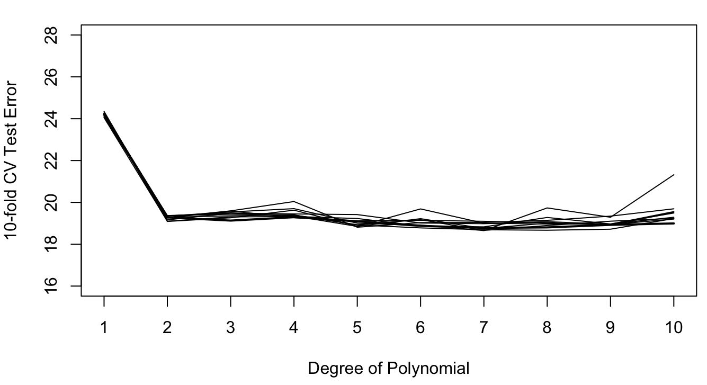

import pandas as pd
import duckdb
con = duckdb.connect(database="../ads5064.ddb")
fit = con.sql("SELECT * FROM fitness").df()
from sklearn.model_selection import train_test_split
train, test = train_test_split(fit,random_state=235,train_size=0.5)
con.close()21 Testing, Validation, Cross-Validation
21.1 Introduction
Evaluating the performance of a model uses a variety of techniques: performance metrics, visualizations, goodness-of-fit criteria, hypothesis tests against alternative models, and so on. For regression and classification models, performance metrics are based on comparing observed and predicted values. In models with a continuous target the comparisons are usually be based on absolute differences \[ | y_i - \widehat{y}_i | \] or squared differences \[ (y_i - \widehat{y}_i)^2 \] The aggregated performance metrics in these cases are the mean absolute error (MAE) \[ \text{MAE} = \frac{1}{n} \sum_{i=1}^n | y_i - \widehat{y}_i | \] and the mean squared prediction error (MSPE) \[ \text{MSPE} = \widehat{\text{MSE}} = \frac{1}{n}\sum_{i=1}^n\left( y_i - \widehat{f}\left( x_i \right) \right)^{2} \] In classification models the measure of model performance is one or more of the statistics based on the confusion matrix, see Section 18.3.3.3. Accuracy, or its complement, the misclassification rate, are commonly used, but precision, recall, \(F\) score, specificity and sensitivity are also highly relevant.
When these metrics are used to resolve the bias-variance tradeoff, applying them to the training data set leads to overfitting because the metrics can be made arbitrarily small for the training data. We encountered this in the regression context with saturated models that interpolate the data points. In a saturated model \(y_i = \widehat{y}_i\) and the MSPE or MAE will be zero. To resolve the bias-variance tradeoff properly, the metrics need to be applied to observations that did not participate in the analysis. This leads us to the distinction between training, testing, and validation data and to the practical mechanics of obtaining estimates of the prediction or classification error relevant for adjudicating bias and variance.
21.2 Training, Testing, and Validation Data
Developing a data science model can involve three different data sets. The training data is used to determine the parameters of the model. The testing data (or test data) is used to evaluate the performance of the model on observations not used in training to provide a reliable estimate of model error. The validation data is used to compare the model to benchmarks and to determine the values of hyperparameters.
Training Data
Training data is the set of \(n\) observations used to train the model. The training data is useful to diagnose whether model assumptions are met, for example,
- does the model adequately describe the mean trend in the (training) data,
- are distributional assumptions met, for example are the errors Gaussian-distributed and does the variance of the target not depend on the inputs
- is it reasonable to assume that the observations are uncorrelated (or even independent)
We can also use the training data after the model fit to detect data points that have a high influence of the analysis. These are data points that substantially affect an important aspect of the model. Based on the training data we can also study the interdependence of the model inputs and whether those relationships affect the model performance negatively.
The diagnostic techniques just mentioned rely on
- Residual diagnostics
- Case-deletion and influence diagnostics
- Collinearity diagnostics
These diagnostics are all very helpful, but they do not answer an important question: how well does the model generalize to observations not used in training the model; how well does the model predict new observations? We also need to figure out, given a single training data set, how to select the values for the hyperparameters of the various techniques.
Definition: Hyperparameter
A hyperparameter is a tuning quantity that controls the overall configuration of a statistical model or machine learning technique. Hyperparameters are sometimes referred to as external parameters, whereas the parameters of the model function (slopes, intercepts, etc.) are called the internal parameters.
Hyperparameters need to be set before a model can be trained and their values impact the performance of the model. The process of determining the values for hyperparameters given a particular data set is called hyperparameter tuning.
Hyperparameters include, for example,
- The number of terms in a polynomial model
- The smoothing parameters in non-parametric regression models
- The bandwidth in kernel-based estimation methods such as LOESS, kernel regression, local polynomial regression
- The kernel function in local models, support vector machines, etc.
- The shrinkage penalty in Lasso, Ridge regression, smoothing splines
- The depth of decision trees
- The number \(k\) in \(k\)-nearest neighbor methods or in \(k\)-means clustering
- The convergence rate and other tolerances that affect numerical optimizations
- The learning rate, number of units, and number of layers in neural networks
Test Data
To measure the true predictive performance of a model we need to apply the model to a different set of observations; a set that was not used in training the model. This set of observations is called the test data set. With a test data set we can measure how well the model generalizes and we can also use it to select the appropriate amount of flexibility of the model. Figure 21.1 displays the general behavior of test and train mean squared prediction error as a function of model flexibility. Since increasing model flexibility comes at the expense of increased model complexity, choosing the \(\text{right}^{\texttrademark{}}\) degree of flexibility chooses the proper model complexity.
The MSPE of the test data set is on average higher than the MSPE of the training data set. Since these are random variables, it can happen in a particular application that the test error is lower than the training error, but this is rare. The model complexity/flexibility is measured here by the number of inputs in the model. As this number increases, the \(\widehat{\text{MSE}}_{\text{Train}}\) decreases toward zero. The \(\widehat{\text{MSE}}_{\text{Test}}\), on the other hand, first decreases, reaches a minimum, and then increases again. The \(\widehat{\text{MSE}}_{\text{Test}}\) is high for models with few parameters because of bias and increases with model flexibility past the minimum because of variability.
The two contributors to the mean square prediction error—bias and variance—work at different ends of the spectrum—models that balance bias and variance fall somewhere in-between. That is why MSPE calculated on a test data set can help resolve the bias–variance tradeoff and the MSPE calculated on the training data set cannot.

The big question is: where do we get the test data?
Validation Data
Before discussing ways to obtain test data sets, a few words about another type of data set, the validation data. The terms test data and validation data are often used interchangeably, but there is a difference. Test data represents new data that should otherwise be representative of the training data. A test data set drawn at random from the training data set typically satisfies that.
Validation data can be a separate data set with known properties, for example, a benchmark data set. Such a data set can be used to compare approaches from different model families, for example, a random forest and a neural network. It can be used to measure model performance against known conditions (typical and atypical) to ensure a model works properly.
Example: Computer Vision
ImageNet is a data set of images organized according to the WordNet hierarchy. ImageNet provides an average of 1,000 images for each meaningful concept in WordNet. The data set is used as a benchmark for object categorization algorithms and currently contains over 14 million images that are labeled and annotated by humans.
The most used subset of ImageNet data is the Large Scale Visual Recognition Challenge (ILSVRC) data set. It is used to evaluate object classification algorithms since 2010. T he data sets for the challenges are themselves broken down into training, test, and validation sets.
The IARPA Janus Benchmark (IJB) data sets contain images and videos used in face detection and face recognition challenges. There are several data sets, for example IJB-B consists of 1,845 subjects with human-labeled face bounding boxes, eye & nose location, and metadata such as skin tone and facial hair for 21,798 still images and 55,026 video frames. The collection methodology for the IJB-B data set is documented .
Test data tells us how well a model performs, validation data tells us which model is best.
Example: Programming Competition
Suppose we want to send one student from a group of students to a programming competition. The goal is to win the competition. During training the students encounter problems from past programming competitions.
Students that do well during training are not necessarily the best candidates for the competition. We need to find out whether a student does well because they memorized the solution or whether they truly understand how to solve the programming problem. To answer this a validation step is used and a set of new programming problems is presented, specifically designed to test student’s ability to apply general concepts in problem solving. At the end of the validation step we have identified the best student to represent the group at the competition.
We are not done, however. Does the best student in the group have a chance in the competition? We now enter the testing phase to answer the question: how well will the best student perform? After administering a real test with new problems, we find out that the student scores above 90%: they are ready for the competition. If, however, we find out that the student scores below 25%, we will not send them to the competition. Instead, we return to the drawing board with a new training procedure and/or a set of new training problems.
Notice that in this situation the validation occurs prior to the testing phase. The validation data set is not a random sample of the training problems held back to test the students after training. The validation data set is a specifically designed set of problems that targets problem solving ability while the testing data set is a set of new problems that are akin to what the students might encounter during the competition.
Validation and test data are often used interchangeably because the test data is often used as the validation data. The questions “which model is best?” and “how well does the model perform?” are answered simultaneously: the best model is the one that achieves the best metric on the test data set. Often that results in choosing the model with the lowest performance metric on the test data set.
21.3 Hold-out Samples
Let’s return to the important question: where do we find the test data set?
Maybe you just happen to have a separate set of data lying around that is just like the training data, but you did not use it. Well, that is highly unlikely.
Typically, we use the data collected, generated, or available for the study to carve out observations for training and testing. This is called a hold-out sample, a subset of the observations is held back for testing and validation. If we start with \(n\) observations, we use \(n - m\) observation to train the model (the training data set), and \(m\) observations to test/validate the model.
In Python you can create this train:test split with the train_test_split() function in sklearn. The following statements load the fitness data from DuckDB into a Pandas DataFrame and split it into two frames of 15 and 16 observations.
The random_state= parameter sets the seed for the random number generator. By setting this to a non-zero integer, the random number generator is initialized with the seed value. That does not mean the initial random number is equal to the seed. It means that the initial state of the random number generator, the starting position for generating random numbers, is now determined.
Setting the seed value of a random number generator makes the selection reproducible. Subsequent runs of the program will produce identical sequences of “random” numbers. We put random in quotes here since no computer generated random number sequence is truly random; these are pseudo-random number generators. Their quality is good enough, however, to treat the generated sequence of numbers as essentially random.
The train_size= parameter specifies the proportion of observations in the training set—if the value is between 0 and 1—or the number of observations in the training set—if the value is an integer > 1.
train.shape(15, 7)train.describe() Age Weight Oxygen ... RestPulse RunPulse MaxPulse
count 15.000000 15.000000 15.000000 ... 15.000000 15.00000 15.000000
mean 49.666667 75.539333 47.693067 ... 52.733333 171.00000 174.133333
std 4.654747 8.076112 4.516180 ... 7.731814 10.96097 9.210760
min 40.000000 59.080000 39.203000 ... 40.000000 148.00000 155.000000
25% 48.000000 70.760000 45.215500 ... 48.000000 166.00000 169.000000
50% 51.000000 76.320000 46.672000 ... 51.000000 170.00000 172.000000
75% 53.000000 80.400000 49.772000 ... 58.500000 178.00000 180.500000
max 57.000000 91.630000 59.571000 ... 67.000000 186.00000 188.000000
[8 rows x 7 columns]test.shape(16, 7)test.describe() Age Weight Oxygen ... RestPulse RunPulse MaxPulse
count 16.000000 16.000000 16.000000 ... 16.000000 16.000000 16.000000
mean 45.812500 79.230625 47.078375 ... 54.125000 168.375000 173.437500
std 5.140931 8.415590 6.125977 ... 7.701731 9.721968 9.408994
min 38.000000 61.240000 37.388000 ... 45.000000 146.000000 155.000000
25% 43.750000 73.285000 43.665750 ... 48.000000 162.000000 167.500000
50% 44.500000 80.170000 47.023500 ... 53.500000 169.000000 174.000000
75% 48.500000 86.295000 50.040750 ... 59.000000 174.500000 180.000000
max 57.000000 91.630000 60.055000 ... 70.000000 186.000000 192.000000
[8 rows x 7 columns]The two data sets have very similar properties as judged by the descriptive statistics. If the goal is to develop a model that can predict the difficult to measure oxygen intake from easy to measure attributes such as age, weight, and pulse, then we would use the 15 observations in the train frame to fit the model and the 16 observations in the test frame to evaluate the model.
If we cull the test data from the overall data, how should we determine an appropriate size for the test data? Here we used a 50:50 split, would it have mattered if we had taken a 20:80 or a 90:10 split? For the two data sets to serve their respective functions, you need enough observations in the training data set to fit the model well enough so it can be tested, and you need enough observations in the test data set to produce a reliable estimate of \(\widehat{\text{MSE}}_\text{Test}\). Splits that allocate between 50 and 90% of the observations to the training data set are common in practice.
With small training proportions you run the risk that the model cannot be fit and/or that the data does not support the intended model. For example, with a 10:90 train:test split in the fitness example, the training data contains only 3 observations and evaluating the effect of all input variables on oxygen intake is not possible—the model is saturated after three inputs are in the model. With categorical inputs, you need to make sure that the training and test data sets contain all the categories. For example, if you categorize age into four age groups and only three groups are present in the training data after the split, the resulting model no longer applies to a population with four age groups. If the categorical target variable is highly unbalanced, for example when a binary variable has very few events or non-events, then splitting the data can result in training or test data sets that contain only one of the outcomes. Training a model is then not possible and the confusion matrix breaks down.
From this discussion we can glean some general advantages and disadvantages of hold-out test samples.
| Advantages | Disadvantages |
|---|---|
| Easy to do | Involves a random selection; results change depending on which observations selected |
| No separate test data set needed | Potentially large variability from run to run, especially for noisy data |
| A general method that can be applied regardless of how model performance is measured | Must decide how large to make the training (test) set |
| Reproducible if fixing random number seed | An observation is used either for testing or for training |
| Tends to overestimate the test error compared to cross-validation methods |
The last two disadvantages in Table 21.1 weigh heavily. Since we cannot rely on the training error for model selection, we are sacrificing observations by excluding them from training. At least we expect then a good estimate of the test error. The reason for overestimating the true test error with a train:test hold-out sample is that models tend to perform worse when trained on fewer observations. Reducing the size of the training data set results in less precise parameter estimates which in turn increases the variability of predictions.
To compare the variability of the hold-out sample method with other techniques, we draw on the Auto data set from ISLR2 (James et al. 2021). The data comprise information on fuel mileage and other vehicle attributes of 392 automobiles. Suppose we want to model mileage as a function of horsepower. Figure 21.2 shows the raw data and fits of a linear and quadratic regression model
\[ \begin{align*} \text{mpg}_{i} &= \beta_{0} + \beta_{1}\text{horsepower}_{i} + \epsilon_{i}\\ \text{mpg}_{i} &= \beta_{0} + \beta_{1}\text{horsepower}_{i} + {\beta_{2}\text{horsepower}_{i}^{2} + \epsilon}_{i} \end{align*} \]

A simple linear regression—the red line in the figure—does not seem appropriate. The model does not pick up the curvature in the underlying trend. A quadratic model seems more appropriate. Can this be quantified? What about a cubic model
\[ \text{mpg}_{i} = \beta_{0} + \beta_1\text{horsepower}_i + \beta_2\text{horsepower}_i^2 + \beta_3\text{horsepower}_i^3 + \epsilon_{i} \]
Figure 21.3 shows the hold-out test errors for all polynomial models up to degree 10. The simple linear regression (SLR) model has degree 1 and is shown on the left. The test error is large for the SLR model and for the 10-degree polynomial. The former is biased as can be seen from the previous graph. The latter is too wiggly and leads to a poor test error because of high variability. The test error is minimized for the quadratic model but we note that the test error is also low for degrees 7—9.

Based on this result we would probably choose the second-degree polynomial. To what extent is this decision the result of having selected the specific 196 observations in the 50:50 split? We can evaluate this by repeating the sampling process a few more times. Figure 21.4 displays the results of 9 additional 50:50 train:test splits.
The variability in the results is considerable. Most replications would select a second-degree polynomial as the model with the lowest test error, but several replications achieve the smallest test error for higher degree polynomials (5th degree, 7th degree, etc.).

Having spent time, energy, resources, money to build a great data set, it seems wasteful to use some observations only for training and the others only for testing. Is there a way in which we can use all observation for training and testing and still get a good estimate (maybe even a better estimate) of the test error?
How about the following proposal:
Split the data 50:50 into sets \(t_1\) and \(t_2\)
Use \(t_1\) as the training data set and determine the mean-squared prediction error from \(t_2\), call this \(\widehat{\text{MSE}}_{(t_2)}\).
Reverse the roles of \(t_1\) and \(t_2\), using \(t_2\) to train the model and \(t_1\) to compute the test error \(\widehat{\text{MSE}}_{(t_1)}\).
Compute the overall test error as the average \[ \widehat{\text{MSE}}_{\text{Test}} = \frac{1}{2} \left ( \widehat{\text{MSE}}_{(t_1)} + \widehat{\text{MSE}}_{(t_2)} \right ) \]
Each observation is used once for training and once for testing. Because of averaging, the combined estimate of test error is more reliable than the individual test errors.
This proposal describes a special case of cross-validation, namely 2-fold cross-validation.
21.4 Cross-validation
Cross-validation is a general method to measure the performance of a model. It is commonly used for predictive models to evaluate how well a model generalizes to new observations, but it can also be used to, for example, select hyperparameters. Cross-validation extends the concept of the hold-out sample to address the drawbacks of train:test splits. It is also a general method; you are not limited to MSE or MCR as performance measurements. Before we dive into cross-validation more deeply, a few words about loss functions.
Loss Functions
Definition: Loss Function
A loss function or cost function maps an event to a real number that reflects some loss or cost incurred from the event.
In data analytics, loss functions measure the discrepancy between observed and predicted values and the losses are typically referred to as errors.
Table 21.2 displays common loss functions in data science.
| Loss Function | Expression | Application Example |
|---|---|---|
| Squared Error | \(\left( y - \widehat{y} \right)^{2}\) | Regression with continuous response |
| Zero-one (0—1) | \(I\left( y \neq \widehat{y} \right)\) | Classification |
| Absolute Value | \(\left| y - \widehat{y} \right|\) | Robust regression |
| Misclassification | \(1 - \max_{j}{\widehat{p}}_{j}\) | Pruning of decision trees |
| Gini Index | \(\sum_{j = 1}^{k}{{\widehat{p}}_{j}\left( 1 - {\widehat{p}}_{j} \right)}\) | Growing of decision trees, neural networks |
| Cross-entropy (Deviance) | \(- 2\sum_{j = 1}^{k}{{n_{j}\log}{\widehat{p}}_{j}}\) | Growing of decision trees, neural networks |
| Entropy | \(- \sum_{j = 1}^{k}{{\widehat{p}}_{j}\log{\widehat{p}}_{j}}\) | Growing of decision trees |
Squared error and zero-one loss dominate data science work in regression and classification problems. For specific methods you will find additional loss functions used to optimize a particular aspect of the model, for example, growing and pruning of decision trees or exponential loss in adaptive boosting.
Suppose the loss associated with an observation is denoted \(\mathcal{l}_{i}\). Cross-validation estimates the average loss for each of \(k\) sets of observations and averages the \(k\) estimates into an overall cross-validation estimate of the loss.
Suppose we create two random sets of (near) equal size for the 31 observations in the fitness data set; \(k = 2\). The sets will have \(n_1 = 15\) and \(n_2 = 16\) observations. This leads to a cross-validation estimate of the loss function for each set:
\[ \begin{align*} {CV}_1\left( \mathcal{l} \right) &= \frac{1}{n_1}\sum_{i = 1}^{n_1}\mathcal{l}_i\\ {CV}_2\left( \mathcal{l} \right) &= \frac{1}{n_2}\sum_{i = 1}^{n_2}\mathcal{l}_i \end{align*} \]
The overall cross-validation loss is the average of the two:
\[ CV\left( \mathcal{l} \right) = \frac{1}{2}\left( {CV}_1\left( \mathcal{l} \right) + {CV}_2\left( \mathcal{l} \right) \right) \]
This is a special case of \(k\)-fold cross-validation; the sets are referred to as folds. The other special case is leave-one-out cross-validation.
\(K\)-fold Cross-validation
The set of \(n\) observations is divided randomly into \(k\) groups of (approximately) equal size. The groups are called the \(k\) folds. The model is fit \(k\) times, holding out a different fold each time. After computing the loss in each fold
\[ {CV}_j\left( \mathcal{l} \right) = \frac{1}{n_{j}}\sum_{i = 1}^{n_j}\mathcal{l}_i \] the overall loss is calculated as the average
\[ CV\left( \mathcal{l} \right) = \frac{1}{k}\sum_{j = 1}^{k}{{CV}_j\left( \mathcal{l} \right)} \]
Figure 21.5 displays 5-fold cross-validation for \(n = 100\) observations. The observations are randomly divided into 5 groups of 20 observations each. The model is trained five times. The first time around, observations in fold 1 serve as the test data set, folds 2—5 serve as the training data set. The second time around, fold 2 serves as the test data set and folds 1, 3, 4, and 5 are the training data set; and so forth. Each time, the average loss is calculated for the 20 observations not included in training. At the end, five average cross-validation losses are averaged to calculate the overall loss.
{kind=link}
| Advantages | Disadvantgages |
|---|---|
| Not as variable as the train:test hold-out sample | Still has a random element due to randomly splitting the data into \(k\) sets |
| Less bias in test error than train:test hold-out sample | Can becomputationally intensive if the model must be fit \(k\) times |
| Not as computationally intensive as leave-one-out cross-validation (see below) | Must decide on the number of folds |
| Every observation is used for training (\(k - 1\) times) and testing (once) | |
| Reproducible if fixing random number seed | |
| A general method that can be applied regardless of how model performance is measured |
The most common values for \(k\) found in practice are 5, 10, and \(n\). \(k = n\) is a special case, called leave-one-out cross-validation; see below. Values of 5 and 10 have shown to lead to good estimates of loss while limiting the variability of the results. The averaging of the losses from the folds has a powerful effect of stabilizing the results.
For the Auto data set, the following figures show the results of repeating 5-fold and 10-fold cross-validation ten times. The results vary considerably less than the ten repetitions of the 50:50 hold-out sample in Figure 21.4. This reduced variability demonstrates the effect of averaging the error estimates from the folds.


The results of 10-fold cross-validation vary less than those of 5-fold CV (compare Figure 21.7 to Figure 21.6). This is the effect of averaging 10 quantities rather than 5. The effect of averaging the results from the folds is stronger than the averaging of observations within the folds. If training a model is computationally intensive, 5-fold cross-validation is still a good solution.
Leave-One-Out Cross-validation
Abbreviated LOOCV, this method removes the random element from cross-validation. Rather than randomly grouping the data set into \(k\) folds, each observation functions as a fold with a single element. In other words, LOOCV is a special case of \(k\)-fold CV where \(k = n\). Each observation is used once as a test set of size 1 and the model is fit to the remaining \(n - 1\) observations. The observation is put back and the next observation is removed from the training set.
LOOCV thus estimates the model \(n\) times, each time removing one of the observations. It is a special case of \(k\)-fold cross-validation where \(k = n\).
A pseudo-algorithm for LOOCV is as follows:
Step 0: Set \(i = 1\)
Step 1: Set the index of the hold-out observation to \(i\)
Step 2. Remove observation \(i\) and fit the model to the remaining \(n - 1\) observations
Step 3. Compute the loss \(\mathcal{l}_{i}\) for the held-out observation
Step 4. Put the observation back into the data. If \(i = n\), go to Step 5. Otherwise, increment \(i\) and return to Step 1.
Step 5. Compute the LOOCV loss as the average of the \(n\) losses: \[ {CV}\left( \mathcal{l} \right) = \frac{1}{n}\sum_{i=1}^n\mathcal{l}_{i} \]
| Advantages | Disadvantages |
|---|---|
| No randomness involved. Identical results upon repetition. | Can become computationally intensive if fitting a model is expensive and no closed-form expressions (or approximations) are available to compute the loss per observation based on a single fit |
| Every observation is used in training (\(n - 1\) times) and in testing (once) | |
| A general method that can be applied to any loss function and model | |
| Good estimate of test error |
The results of LOOCV for the Auto data set are shown in Figure 21.8. Based on LOOCV we would select the seventh-degree polynomial.
Training a model \(n\) times on \(n-1\) observations each can be computationally demanding. LOOCV thus might not be practically feasible for some models. Fortunately, the leave-one-out cross-validation error can be computed for important model families without fitting the model \(n\) times. For linear regression models, for example, formulas exist to compute the leave-one-out prediction error from information available after training the model once on all observations. Wait, what?
Suppose we are predicting the target value of the \(i\)th observation in the LOO step when that observation is not in the training set and denote this predicted value as \(\widehat{y}_{-i}\). The LOO cross-validation error using a squared error loss function is then
\[ \frac{1}{n}\sum_{i = 1}^{n}\left( y_{i} - {\widehat{y}}_{- i} \right)^{2} \]
The sum in this expression is called the PRESS statistic (for prediction sum of squares). The interesting result is that \(\widehat{y}_{-i}\) can be calculated as
\[ y_{i} - \widehat{y}_{-i} = \frac{y_i - \widehat{y}_i}{1 - h_{ii}} \tag{21.1}\]
where \(h_{ii}\) is the leverage of the \(i\)th observation. We will discuss the leverage in more detail in the context of linear model diagnostics. At this point it is sufficient to note that the leverage measures how unusual an observation is with respect to the input variables of the model and that \(0 < h_{ii} < 1\).
The term in the numerator of Equation 21.1 is the regular residual for \(y_{i}\). We can thus calculate the leave-one-out prediction error from the difference between observed and predicted values in the full training data by adjusting for the leverage. Since \(0 < h_{ii} < 1\), it follows that
\[ y_{i} - \widehat{y}_{- i} > y_{i} - \widehat{y}_i \]
Predicting an observation that was not used in training the model cannot be more precise than predicting the observation if it is part of the training set.
We are now equipped with a number of approaches to estimate the test error: a separate test data set, a hold-out sample, \(k\)-fold cross-validation, and leave-one-out cross-validation. But wait, there is more.
21.5 Out-of-bag Error
Some data science models are based on applying a basic learning algorithm repeatedly to samples drawn from the training data. The trick is that the samples are of the same size as the training data and that they are drawn with replacement. Suppose that your training data consists of \(n=20\) observations. A sample of the same size drawn with replacement could be the following observation numbers:
set.seed(234)
sample(seq(1,20),replace=TRUE) [1] 1 2 14 2 18 13 1 4 4 15 14 11 18 10 13 8 1 16 3 19There are still \(n=20\) observations in the sample, but not all of the original observations are present. Instead, observation #1 appears three times, #2 appears twice, observation #4 appears twice, #14 appears twice, and so on.
Such a sample of the same size as the original data, drawn with replacement, is called a bootstrap sample. The procedure to draw multiple bootstrap samples and to apply a learning method to each is called bootstrapping. It is a defining characteristic of important statistical learning methods such as bagged trees and random forests. Like cross-validation, bootstrapping is a general method that can be applied more widely.
We mention bootstrapping here because it naturally lends itself to estimating the test error of a model. Since sampling is with replacement, some observations will appear once in the bootstrap sample, some will appear more than once, and others will not appear at all.
Consider a single bootstrap sample from a data set with \(n\) observations. The probability that the \(n\)th observation selected into the bootstrap sample is the \(j\)th observation in the data frame is \(1/n\), because sampling is with replacement. (The probability that a particular observation is selected at any step is \(1/n\).) The complement, the probability that the \(n\)th bootstrap observation is not the \(j\)th obs is \(1-1/n\). It follows that in a bootstrap sample of size \(n\), the probability that a particular observation is not included is \[ (1 - 1/n)^n \approx 1/3 \]
As \(n\) grows, this probability quickly approaches 1/3. Figure 21.9 displays \((1-1/n)^n\) as a function of \(n\). The asymptote near 1/3 is reached for small data set sizes (> 10).

A bootstrap sample will contain about 2/3 of the observations from the original data set, some with repeated values. The other third of the observations are a natural hold-out sample for this bootstrap sample. The bootstrap procedure provides a mechanism to estimate the test error similar to a cross-validation procedure.
Two methods come to mind to use the bootstrap samples to estimate the test error based on bootstrap samples.
The first method computes the test error based on the \(m\) observations not included in a particular bootstrap sample. This set of observations is called the out-of-bag set. If the criterion is mean-squared prediction error, this would yield for the \(j\)th bootstrap sample \[ \widehat{\text{MSE}}_{\text{Test}}^{(j)} = \frac{1}{m} \sum_{k=1}^m (y_k - \widehat{y}_k)^2 \] Repeats this for each of the \(B\) bootstrap samples and compute the overall test error estimate as the average of the \(B\) out-of-bag errors: \[ \widehat{\text{MSE}}_{\text{Test}} = \frac{1}{B}\sum_{j=1}^B \widehat{\text{MSE}}_{\text{Test}}^{(j)} \]
The second method of computing the out-of-bag error is to compute the predicted value for an observation whenever it is out-of-bag. This yields about \(B/3\) predicted values for each observation, and when averaged, an overall out-of-bag prediction for \(y_i\). The overall error is then computed from the \(n\) out-of-bag predictions. This estimate, for \(B\) sufficiently large, is equivalent to the leave-one-out prediction error, but it is not identical to the leave-one-out error because bootstrapping involves a random element and LOOCV is deterministic.
The following function computes the out-of-bag error estimates both ways for the Auto data and the model \[
\text{mpg} = \beta_0 + \beta_1\text{horsepower} + \beta_2\text{horsepower}^2 + \epsilon
\] and compares them to the LOOCV error:
Computing \(\widehat{\text{MSE}}_{\text{Test}}^{(j)}\) for each bootstrap sample and averaging those (a mean across \(B\) quantities)
Averaging the individual \(B/3\) out-of-bag predictions and computing the mean of those (a mean across \(n\) quantities)
library(ISLR2)
data(Auto)
OOB_error <- function(B=1000) {
n <- dim(Auto)[1]
# Compute LOOCV error first
reg <- lm(mpg ~ poly(horsepower,2), data=Auto)
leverage <- hatvalues(reg)
PRESS_res <- reg$residuals / (1-leverage)
PRESS <- sum(PRESS_res^2)
loocv_error <- PRESS/length(leverage);
ind <- seq(1,n,1)
MSE_Te <- 0
oob_preds <- matrix(0,nrow=n,ncol=2)
# draw the bootstrap samples
for(i in 1:B) {
bs <- sample(n,n,replace=TRUE) # replace=TRUE is important here!
oob_ind <- !(ind %in% bs) # the index of out-of-bag observations
reg <- lm(mpg ~ poly(horsepower,2), data=Auto[bs,])
# predict the response for the out-of-bag observations
oob_pred <- predict(reg,newdata=Auto[oob_ind,])
# accumulate predictions of the out-of-bag observations
oob_preds[oob_ind,1] <- oob_preds[oob_ind,1] + oob_pred
oob_preds[oob_ind,2] <- oob_preds[oob_ind,2] + 1
# Accumulate mean-square prediction errors in the jth bootstrap sample
MSE_Te <- MSE_Te + mean((oob_pred - Auto[oob_ind,"mpg"])^2)
}
# Average the MSE_Te^(j) across the B samples
MSE_Te <- MSE_Te / B
# Compute the average predictions for the n observations
# oobs_preds[,2] will be approximately B/3 for each observation
oob_preds[,1] <- oob_preds[,1] / oob_preds[,2]
oob_error <- mean((oob_preds[,1]-Auto[,"mpg"])^2)
return(list(MSE_Te=MSE_Te, OOB_error=oob_error, LOOCV=loocv_error))
}
set.seed(765)
oe <- OOB_error(B=1000)
oe$MSE_Te
[1] 19.44796
$OOB_error
[1] 19.24568
$LOOCV
[1] 19.24821The OOB_error estimate based on the averaged predictions is very close to the leave-one-out prediction error.